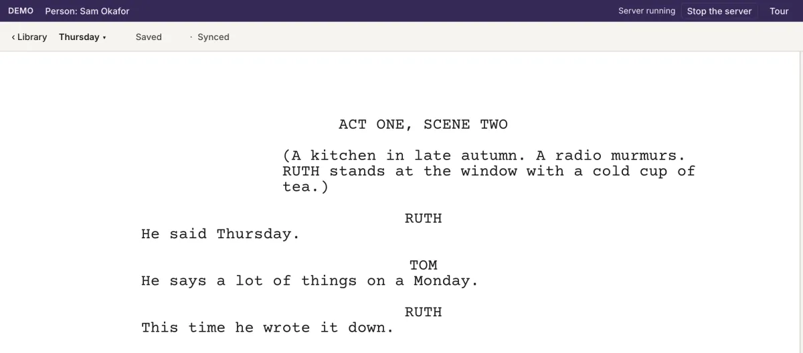
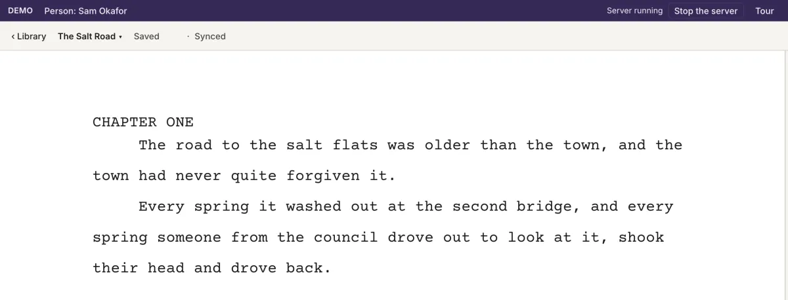

Script writing for film, TV, the stage, books, games and the newsroom
Write anywhere. Lose nothing.
Write alone or with the whole room, online or on a train with no signal. Manent keeps every word on your device first, and gives everyone the same pages, on screen and in the PDF.
Free and open source · No account · Also in any current browser
EXT. ARDLE SLIP - BEFORE DAWNPriya Nair
Fog sits on the water. One lamp swings over the ramp chain, and the hull knocks against the fenders.
IDA
(not looking up)
Tide's turned. We go at six or we don't go at all.
CAL coils a mooring line, slow and deliberate.Dana Reyes
CAL
Then we don't go.
- Free and open source, Apache-2.0
- No account to start
- Works with no network
- Mac, Windows, Linux and the browser
- FDX, Fountain and PDF, in and out
- No AI writing. Never trained on your words.
Never lose a word
A crash, a dropped connection or a cleared browser still costs writers whole scenes.
What you write stays written.
Every keystroke is saved on your device before it goes anywhere. Lose the signal, close the lid, pull the plug: what you saw saved is there when you come back.
In Manent, working offline is a normal way to work, not an exception. Write on a plane, on a basement stage or in a rehearsal hall with no Wi-Fi. When the connection comes back, your changes go out, everyone else's come in, and one line tells you what happened:
340 changes synced · 2 passages overlap — review
If two people changed the same line, you see both versions and choose. Nothing is thrown away, and no message ever counts words lost, because none are.
Tested the hard way: the server was killed mid-sentence again and again, and not one acknowledged change was lost.
INT. WHEELHOUSE - NIGHT
Rain on the glass. IDA eases the throttles back. Slow.
IDA
(into the radio)
Ardle slip, this is Marguerite. We're coming in slow.
CAL (O.S.)
Copy. Lights are on for you.
-
Offline, all of it
Write, rename, compare drafts, restore and export with no connection.
-
Back where you were
After a crash the script opens at your last keystroke: "Your last 3 changes were already saved."
-
Overlaps, set aside for you
When two of you changed the same passage, both versions wait under To review.
-
Nothing silently dropped
Text that can't be placed is kept as Recovered text, never discarded.
Write together
The whole room in one script, as it's typed.
Every co-writer's caret carries their name. Their words appear on your page as they type them, whether they're down the hall or catching up from a train.
Follow the showrunner's caret through a rewrite. Leave a comment on a line, a scene or the whole script. Suggest a change as an underline your co-writer can accept, instead of typing over their words. Pitch an alternate line and let the person driving decide. Write a scene on your own and hand it in when it's ready. Your undo only undoes your own typing, never someone else's.
An edit reaches your co-writer's screen while you're still on the next word.
MAREN
Nobody's logged a crossing since the fog came in.
IDA folds the tide table and puts it away.
IDA
Then I'll be the first.
MAREN
Nobody's logged a crossing since the fog came in.
IDA folds the tide table and puts it away.
IDA
Then I'll be the first.Sam Okafor
Lose “logged”? Too formal for Maren.
-
Names on every caret
See who is where: on the page, in the margin and in the Scenes list.
-
Comments and notes
Threads on a line or a scene. Notes marked Writers only never print.
-
Suggest, don't overwrite
Additions underlined, deletions struck through, each accepted or declined in one click.
-
Write privately, then hand in
Draft your scene where no one else can see it, then give it to the room.
The same page everywhere
Page 47 is page 47. Everywhere.
On your laptop, in your co-writer's browser, on the producer's phone and in the PDF, every page starts on the same line.
Manent works out where each page breaks; it doesn't read it off your screen. So every device and the PDF agree on the page breaks, the (MORE) and (CONT'D), and the page count. Change the paper to A4 and everyone sees the same new count at once:
Sam changed paper size to A4 · 12 → 11 pages
Each script remembers the layout it was written with, so an update to Manent never moves your pages unless you ask it to.
EXT. FERRY SLIP - DAY
The ramp comes down with a bang.
MAREN
(to Ida, low)
Nobody's logged a crossing since
the fog came
in. Not the mail
boat, not the Ardle men.
IDA
Then I'll be the first. Cast off
when I say.
She doesn't wait for an answer.
EXT. FERRY SLIP - DAY
The ramp comes down with a bang.
MAREN
(to Ida, low)
Nobody's logged a crossing since
the fog came
in. Not the mail
boat, not the Ardle men.
IDA
Then I'll be the first. Cast off
when I say.
She doesn't wait for an answer.
-
True script pages
12 pt Courier, standard margins, six lines to the inch.
-
The screen is the PDF
The PDF is drawn from the same page breaks, line for line.
-
Read on a phone
A draft link opens on any phone and keeps the page numbers.
-
Pages that stay put
An update never repaginates a script without your say-so.
Who it's for
What do you write?
Choose yours: what gets in your way, and how your day goes in Manent instead.
From first draft to shooting script, in one app.
For feature and short film writers.
What gets in the way
- A crash or a lost sync takes a day's pages with it.
- A reader notices when the margins or the page count look wrong.
- An activation key stands between you and your own script.
- The notes come back, and you can't say what you changed since the draft they read.
Your day in Manent
Write the scene the way you see it, and let Tab and Enter keep the format. Name the draft before it goes out, then send a clean PDF with the reader's name on it. When the notes come back, open Changes since and see every line you rewrote. When the script sells, lock it and issue Blue in the same file. There's no export, no second app and nothing to retype.

What you'll use
-
Pages a reader trusts
Courier, standard margins, with (MORE) and (CONT'D) set for you.
-
Tab and Enter
Scene heading, action, character, dialogue, without reaching for the mouse.
-
Send a draft
Clean PDF, FDX or a watermarked copy, with a record of who got which.
-
Changes since
Exactly what you rewrote since the draft they read.
The whole room in one script.
For showrunners, staff writers, writers' assistants and script coordinators.
What gets in the way
- Every round has to be marked, issued and checked again, usually at 2 a.m.
- Scenes from five writers have to become one script.
- A wrong colour, a missing A-page or a renumbered scene costs the crew a morning.
- Studio, network and table-read notes arrive against different drafts.
Your day in Manent
The season lives in one index: every episode with its writer, stage, due date and pages over target. Break story on the board, give each writer their scenes, and let them write privately until they hand in. In the room, the showrunner presents and drives, and anyone can pitch an alternate line without touching the keys. Studio, network and table-read notes come in as rounds, pinned to the draft they were given on. At 22:41 the coordinator issues Blue, and nobody had to stop typing.
| Ep | Title | Stage | Due | Pages | |
|---|---|---|---|---|---|
| 101 | Ardle Slip | Blue | — | 58 | Synced |
| 102 | Fog Bell | White | — | 56 | Synced |
| 103 | The Licence | Network · 4 openNetwork · 3 open | Thu | 61 | Synced |
| 104 | Port Shaft | Studio | Mon | 52 | Synced |
| 105 | Neap | Writer's FirstStudio | 30 Nov | 3144 | Synced |
| 106 | Wrenna | Outline | 7 Dec | — | 1 waitingSynced |
What you'll use
-
One season, one index
An episode table with writer, stage, due date and pages over target.
-
Present to the room
One driver on the big screen; "Take keys" hands over.
-
Write privately, hand in
Your pass at a scene stays yours until you hand it in.
-
Notes in rounds
Studio, Network, Table read: each note pinned to its line, open or addressed.
The script, the clock and the prompter agree.
For news producers, late-night and variety writers, and podcasters.
What gets in the way
- Breaking news rewrites the show minutes before air.
- The packet gets cut from fifty pages to four by air.
- The prompter must never show text that nobody sent.
- Back-timing by hand while the show runs long.
Your day in Manent
Build the show as a rundown of small documents, one per story, so a late change touches one story and yesterday's show is never today's. Read-rate timing gives each story its length as you type, and the rundown keeps front and back times and the over or under. Rewrite A3 two minutes before air and its row reads Changed — not on prompter until you send it. Inside the air window, the prompter changes only when someone sends, and if its feed drops it tells you: Feed lost 18:59:12 — showing last received.
| # | Segment | Dur | Start | Back | Prompter |
|---|---|---|---|---|---|
| 1 | ▸ Headlines | 1:20 | 18:00:00 | 17:59:5018:00:20 | On prompter |
| 2 | ▸ Tramways strike | 3:40 | 18:01:20 | 18:01:1018:01:40 | On prompter |
| 3 | ▸ Cup replay | 2:50 | 18:05:00 | 18:04:5018:05:20 | Changed — not on prompter SendOn prompter |
| 4 | ▸ Harbour fog warning | 1:301:00AC | 18:07:50 | 18:07:4018:08:10 | On prompter |
| 5 | Weather | 2:10 | 18:09:2018:08:50 | 18:09:10 | — |
| 6 | ▸ Ferry timetable | 1:45 | 18:11:3018:11:00 | 18:11:20 | On prompter |
…and the depot at Kell Street stays shut until further notice. The last tram left the city centre at twenty past twelve.
Cup replay
Lannick Athletic are into the fourth round after a two-nil win over Port Allard in last night's replay.
What you'll use
-
A rundown that times itself
Duration, front and back times, and the over or under, to the second.
-
A prompter that waits to be sent
Every row says On prompter, or Changed — not on prompter.
-
Read-rate timing
Running time for sketches, monologues and podcast segments as you write.
-
Files when the network fails
The desktop app writes the run order and story text to a folder.
Plays laid out as plays, not screenplays in disguise.
For playwrights, dramaturgs and stage managers.
What gets in the way
- A word processor needs a home-made template before it can set a play.
- Rehearsal brings new pages every day, and the company has to know which are new.
- Which draft went to which theatre, and what has changed since the last reading?
- Adapting a novel means two windows and a lot of retyping.
Your day in Manent
Write with the names centred and the stage directions set in parentheses by the layout, not by you. The cast of characters and the setting get front pages of their own. Before rehearsal, name the day's draft and print the new pages with every change marked, so the company knows which lines are new. Send a PDF any theatre can open, and keep a record of which draft went where. Adapting a book? "Start a stage play from this…" opens the book beside your play, chapter by chapter. The adapting stays yours.

What you'll use
-
A real play format
Centred names, acts and scenes, with stage directions set by the layout.
-
Front pages
Title, cast of characters and setting, each on a page of its own.
-
Today's new pages
Changes since yesterday's draft, marked for the company.
-
The source beside you
The book stays open next to the play. Manent never rewrites it for you.
A whole manuscript in one document.
For novelists and long-form writers.
What gets in the way
- A sync that went wrong cost a chapter.
- The book slows down once it's long, so it gets split into files.
- Terms that let a company train on your words.
- Which version had the better chapter twelve?
Your day in Manent
Write the whole book in one document, in standard manuscript layout, with each chapter starting on a new page and the chapter list beside it. Work on the train or at the kitchen table with no connection. Every version is kept: open last month's chapter twelve as it was, and bring it back whole, or just the scene you liked. Turn on focus mode and typewriter scrolling, and keep only the sentence in front of you. Nothing in Manent writes for you, and your words are never used to train AI.

What you'll use
-
Standard manuscript layout
Double-spaced Courier, first lines indented, each chapter on a new page.
-
Chapters beside the page
Jump, reorder and see each chapter's length.
-
Every version kept
Restore a chapter or the whole book, at any time.
-
Your words, not training data
No AI writing features, and no training on your book.
Branching lines and Ink, written like a script.
For narrative designers, game writers and animation writers.
What gets in the way
- Moving a line must not break the build.
- Text gets retyped for the engine, the voice session and localisation.
- The record draft changes after the voices are recorded.
- Testing a branch means leaving the page.
Your day in Manent
Write a game script with Emote, Camera and Engine direction beside the usual elements, and branching lines coloured as you type. Export line data as JSON or XML with stable IDs, so moving a line never breaks the build. Write Ink as plain source and watch it compile as you type, with a player beside it: choose, go back, restart and watch your variables change. For animation, number every dialogue line, move the script through Record, Animatic and Conformed, and export the pickup lines for the next session.
What you'll use
-
Branching lines
Choices, gathers, conditions and tags, recognised as you type.
-
Ink, with its player
It compiles as you type and plays beside the source.
-
Line data with stable IDs
JSON and XML that your engine, voice team and localisation can read.
-
Numbered lines and pickups
Numbered dialogue lines, and a pickup list for the booth.
Production revisions
Lock the pages. Issue Blue. Keep writing.
When the script goes into production, Manent keeps the coordinator's books: locked numbers, A-pages, colours and asterisks, while the room goes on typing in the same script.
Lock for production once. From then on, text that runs over a page makes 12A and 12B, and never flows back. A new scene between 12 and 13 becomes 12A. Every changed line gets its asterisk, and if you type a word and delete it again, no mark is left. Issue Blue and Manent freezes the draft, stamps every revised page Blue Rev. (16 Nov 2026), records who it went to and starts Pink. Sent the wrong thing? Recall it within 24 hours, and a correction goes out instead of a silent change. Anyone who was offline when Blue went out is told when they reconnect:
While you were offline, Priya issued Blue. Your changes since then are marked Pink.
The colours follow the standard order, or one of your own:
- White
- Blue
- Pink
- Yellow
- Green
- Goldenrod
- Buff
- Salmon
- Cherry
18EXT. EAST CHANNEL - NIGHT18
The Marguerite noses into the fog. Her lamps make a room of light and nothing outside it.
CAL
Ida. That's the Bar. We're on top of it.
IDA
Then I'll be the first.
Somebody has to.*
PIKE (O.S.)
Four fathoms!
The hull shudders. Somewhere below, the port shaft knocks twice and goes quiet.
IDA
Nobody move. Let her drift.
For a long moment the only sound is water along the hull. Then, far off, a bell.
CAL
That's the Ardle buoy.
IDA
(quietly)
No. The Ardle buoy rings twice.
She kills the engine. In the silence, the bell rings again. Once.
PIKE (O.S.)
There's a boat out there. No lights.
CAL
Nobody's out tonight. Nobody but us.
PIKE comes aft fast, wet to the knees, and points into the white.
PIKE
There. Port side.
A shape in the fog: a hull, low and dark, drifting stern first. No one at the wheel.
IDA
(to Cal)
Get the boat hook.
IDA
(to Cal)
Get the boat hook.
-
Locked pages and scenes
12A, 12B and A13 by your numbering scheme, the same on every screen.
-
Asterisks that keep up
Worked out from what changed since the last issue, so they're never stale.
-
Colours in words
A band down the page edge and "Blue Rev." in the header, so the colour survives a black-and-white copy.
-
Issue and Recall
Freeze, stamp and send in one step; recall within 24 hours.
-
Omitted scenes and sides
OMITTED keeps its number, and the scenes you select export as sides.
History and drafts
Every draft kept. Any of them back.
Manent keeps every session, every named draft and every issue, and opens any of them as it was, page breaks and all.
Name a draft with Cmd/Ctrl+Shift+S: Writer's First, Studio, Network, Table. See Changes since any of them on the page, side by side, or as asterisks only. Restore one scene or the whole script. A restore is a new change of its own, so Before restore is always there to go back to. Ask "Who wrote this?" of any line. However long the show runs, history is kept apart from the script, so the script you open stays quick.
MAREN
No one has crossed since the fog. Nobody's logged a crossing since the fog came in.
IDA folds the tide table and puts it away.
IDA
Then I'll be the first. Cast off when I say.
The script as it is now is kept as 'Before restore'.
-
Every session, by day
See what changed, who changed it and when.
-
Named drafts
Dated, labelled and never thinned out.
-
Changes since
Against any draft: on the page, side by side, or asterisks only.
-
Restore without fear
One scene or the whole script, and you can always undo it.
How sync works
Three words tell you where your words are.
- Saved
- It's on this device. It was written there before anything was sent.
- Synced
- The server has it, and every other window on the script can get it.
- To review
- Two people changed the same passage. Both versions wait for you to choose.
Offline, 12 waiting means you keep writing; the twelve go as soon as you're back. A browser can clear what a site stores when its disk runs low, so Manent tells you plainly when a script lives only in this browser. The desktop app keeps every script on your disk.
Formats and files
Every kind of script. Every file you already have.
Eight formats, one way of writing. Press Tab and Enter, and the page keeps the format.
Type INT. and the line becomes a scene heading. Enter goes to action. Tab makes a character, Enter starts the dialogue, and an opening bracket starts a parenthetical. An empty line always says what it is and what to type: "Scene heading — type INT. or EXT."
INT. HOLLIS KITCHEN - NIGHT
SLOW PUSH IN ON THE WINDOW.
NORA sets two cups on the table. Only one of them is for her.
IDA
(at the window)
Your father's boat is still out.
Action · Tab for Character
Character — type a nameNORA
Dialogue — what they sayIt's only fog.
Play fog_horn_far. Hold kitchen ambience.
Chapter Four
Nora set two cups on the table. Only one of them was for her.
“Your father's boat is still out,” Ida said from the window.
“It's only fog.”
- ScreenplayFilm, one-hour and single-camera, to the standard measurements.
- Multi-cameraDouble-spaced, action in capitals, lettered scenes, a cast list under each heading.
- Stage playCentred names, stage directions set by the layout, front pages for cast and setting.
- ManuscriptStandard manuscript layout, a new page for each chapter.
- AnimationNumbered dialogue lines, Record, Animatic and Conformed drafts, a pickup list.
- Variety and podcastsSlugs and brackets, read-rate timing, segments and cues.
- Game scriptEmote, Camera and Engine direction, with branching lines.
- InkPlain Ink source that compiles as you type, with its player.
Rundowns for news and live shows sit beside them, with timing and a prompter.
Bring your scripts, and take them with you.
Every import ends with one line saying what came across, and if the page count differs from the app the script came from, that line tells you. Nothing is dropped without a word.
INT. LAMP ROOM - NIGHT
The lens turns on its bath of mercury. Every eleven seconds the beam crosses the wall and is gone.
ELSPETH
Count it with me. One, and two, and three.
INT. TERMINAL OFFICE - DAY
Timetables pinned three deep. A kettle ticks as it cools. MAREN reads a letter twice, then folds it into her coat.
MAREN
They want the licence back by Friday.
EXT. HARBOUR MOUTH - DAWN
Flat water. The tide stands still between going and coming, and every boat on the slip waits for it.
ARNE
Twenty minutes of slack. Then she's yours.
-
Bring your scripts
FDX and Fountain open with their notes, dual dialogue, scene numbers and revision marks.
-
Even the old ones
Scripts saved as .fdr, the format used before FDX (version 7 and earlier), import too.
-
Leave whenever you like
Save as FDX, Fountain, PDF or Ink, offline, at any time.
-
Paste and go
Paste Fountain or plain text and it becomes script elements, with one undo back to plain text.
-
PDF, Word and text
Import a PDF with real text, a .docx or a .txt typed as a script.
-
The whole project in one file
Scripts, drafts and attachments together in one archive.
Fast at any length
A 2,000-page book types like a ten-page short.
Long scripts and whole manuscripts stay in one document. There's no splitting the book into parts to keep the app responsive.
Manent lays out only what changed, and leaves the rest of the document alone until you reach it. Typing on page 1,400 feels the same as typing on page 1. If an old machine does start to slow, Manent says so once and offers to split the document. It never refuses one.
- Keystroke to screen, 2,000 pages
- As quick as on the first page
- Opening a 2,000-page document
- Straight to where you left off
- Repaginating after a paper change, 120 pages
- Before you look up
- Comparing two 2,000-page drafts
- While you pour a coffee
The benchmark report gives the machine, the method and the raw data behind each figure. Read the benchmark report
The desktop app
Manent on your computer, with or without a network.
For Mac, Windows and Linux. Every script on your own disk, and all of it works offline: writing, drafts, restore and export.
Open an .fdx, .fountain, .fdr, .pdf, .docx or .ink file from the Open dialog, or drop it on the window. The menus are where your system puts them. Updates install themselves and never lose a change that is waiting to sync. Start a second copy and the first simply comes forward.
The first time you open it, macOS or Windows asks you to confirm an app downloaded from the internet. The download page shows the two clicks. Release notes
INT. LAMP ROOM - NIGHT
ELSPETH trims the wick by feel. The beam swings out over the water and finds nothing.
ELSPETH
Eleven seconds. It's always been eleven.
She writes the time in the log and signs it.
Run the demo
Or run the demo: a whole writers' room, ready to explore.
Six people you can be, with no password: a showrunner, a staff writer, a script coordinator, an executive, a news producer, and you. Scripts at every stage, a show day with its rundown and prompter, a 2,000-page book, and a Tour that takes you through each promise and tells you what to check. Open two windows as two people and write together. The demo bar lets you cut the connection, stop the server and add writers, so you can test every promise yourself.
-
Install Bun
Bun is the free tool that runs Manent (1.4.4 or later). On a Mac or Linux, paste
curl -fsSL https://bun.com/install | bashinto Terminal. On Windows, follow the steps at bun.com. -
Get the code and start it
git clone https://github.com/HMarzban/manent.git cd manent bun run demo
No git? Download the code as a ZIP, unpack it, and run the last line in its folder. With make,
make demodoes the same. -
Write
It opens at
http://localhost:4747in your browser.
No terminal? The desktop app opens the same demo.

What to try in five minutes
- Pick Sam Okafor and open The Lamp Room.
- Open the same address in a second window, pick Dana Reyes, and type in both.
- Choose Offline in the demo bar, keep writing and watch the count; go back Online.
- Press Stop the server, keep writing, then Start the server: everything you saw saved is there.
- Open The Long Night as Priya Nair and issue Pink.
What the recording shows
- Two windows are open on The Long Night, both signed in as Sam Okafor. Both read Saved · Synced.
- Window 1 types. Tab makes the character name MARA, Enter starts her dialogue, and every letter appears in window 2 as it is typed, with window 1's caret and name.
- Window 2 types a line of action, and it appears in window 1.
- Window 2's network is cut. It keeps writing a clerk's line and Mara's answer, and its status reads Offline, 4 waiting. Window 1 does not have those lines yet.
- The network comes back. Window 2 reads Syncing…, then Synced, and window 1 now holds every line.
Yours to keep
Free, open source, and yours.
Manent is open source under the Apache License 2.0. No account, no subscription, no activation key, and no one can take it away from you.
-
Every line in the open
If the project stopped tomorrow, your copy would keep working.
-
No account to start
The first thing you see is page 1, and Manent sends no usage data.
-
Your files leave with you
Export any script, in any format, offline, whenever you like.
-
No AI writing. No training.
Nothing in Manent writes for you, and your words never train AI.
Manent has no features that write for you: it generates no scenes, lines, summaries or suggestions. Your scripts are never used to train AI, by Manent or by anyone Manent works with.
Developers: read it, build it, change it. Issues and pull requests are welcome.
How it compares
Desktop apps keep you offline. Browser apps let you write together. Manent does both.
What each kind of writing tool typically offers, beside Manent. Individual apps vary, so the named comparison checks each one against its maker's own pages.
| Feature | Manent | Desktop screenwriting apps | Cloud screenwriting apps | Open-source screenwriting apps | General document editors |
|---|---|---|---|---|---|
| Works offline | Yes Every change is stored on your device first, in the browser and in the desktop app; waiting changes sync when you're back. | Yes The full app works on local files; the cloud companions need a connection. | Partial Offline edits sync later, mainly in the desktop app; offline in the browser is limited, or was retired. | Yes Local files. | Partial Offline edits sync later, once offline is turned on per browser or per file. |
| Live collaboration | Yes Named carets, Follow, comments and suggestions, live or merged after offline work, with no paid tier. | Partial Live sessions in most, with every writer on the same version, or through a paid cloud service. | Yes Simultaneous editing with cursors or avatars; inviting editors often needs a paid plan. | No Single-user, or through a paid cloud plan. | Yes Simultaneous editing. |
| Same pages on every device and in the PDF | Yes One page calculation for every device and the PDF, pinned to each script. | Partial The desktop app is the reference; one vendor states that its cloud version does not paginate exactly as the desktop. | Unknown Mostly no public claim; one vendor claimed identical page counts on every device and in PDFs, in 2018. | Partial One app states that it produces exactly the same output on every platform. | Unknown No claim; not a script layout. |
| Production revisions | Yes Locked pages and scenes, A-pages, colours, asterisks, Issue and Recall. | Yes Locked pages, A-pages, colours and asterisks in most; colours and asterisks only in one. | Partial Revision colours and asterisks on paid plans; locked pages with A-pages in one. | Partial None in one; some in the other. | No None. |
| Version history | Yes Every session and named draft, Changes since, and restore of a scene or the whole script. | Partial Backups and comparing on the desktop; full history in a paid cloud service. | Yes Snapshots, comparing and restore, often on the top plan. | Partial Drafts, or comparing two files. | Yes Version history with restore and named versions. |
| Formats, including games and Ink | Eight Screenplay, multi-camera, stage play, manuscript, animation, variety, game script and Ink, plus rundowns and podcasts. | Partial Screenplay, TV and stage everywhere; some add multi-camera, novel, comic or podcast; no games or branching. | Partial Screenplay and TV everywhere; stage, AV and others vary; games only in a separate product. | Partial Screenplay only, or screenplay, series, stage, novel, comic and audio. | No No script formats without third-party add-ons. |
| FDX and Fountain files | Yes Both in and out; old .fdr files import. | Yes FDX in and out; most read and write Fountain, and one cannot open it. | Yes FDX and Fountain in and out; one imports FDX only. | Yes FDX and Fountain in and out. | No Neither, without third-party add-ons. |
| Open source, and your files | Yes Apache License 2.0. Scripts live on your device and a server you run; export everything at any time. | No Proprietary; scripts are local files, and the terms leave them yours. | No Proprietary; scripts live in the vendor's cloud, with export, and the terms leave them yours. | Yes Source published under the GPL, one with paid modules kept private; local files. | No Proprietary; documents live in the vendor's cloud, with full export. |
| Price | Free No account, no tiers. | One-time A licence of about USD 80 to 250, with optional cloud subscriptions; one is sold by subscription only. | Free + paid tiers A free tier, then about USD 70 to 225 a year for one writer; production features on upper tiers. | Free Free; one also sells paid tiers and AI credits. | Free + paid tiers Free for personal use; per-user business plans. |
| AI features, and training on your words | None No features that write for you; your words are never used to train AI. | No No AI writing features found; one vendor states that it never uses scripts to train AI. | Yes Paid AI add-ons in most; what each says about training differs. | Partial None in one; a paid AI assistant in the other, with no published training policy. | Yes Built-in generative AI; the vendor says it does not train on your content without permission. |
Category cells describe what is typical; individual apps vary.
Questions
Questions writers ask
Is Manent free?
Yes. Manent is free and open source under the Apache License 2.0. There are no paid plans, no tiers and no activation keys.
Do I need an account?
No. Manent opens on page 1, and your script stays on your device until you choose to share it.
Does it really work with no connection?
Yes. Writing, drafts, Changes since, restore and export all work offline. Saved means the change is on your device; Synced means the server has it too. When you're back online, everything waiting goes out by itself.
What happens if two of us change the same line?
Manent merges what it can, character by character. Where your edits really do collide, both versions are kept under To review, and you choose: keep as merged, use yours or use theirs. Text that can't be placed is kept as Recovered text. Nothing is thrown away.
Can I open my .fdx, Fountain and old .fdr files?
Yes. FDX and Fountain open and save, with notes, dual dialogue, scene numbers and revision marks. Old .fdr scripts from version 7 and earlier import. PDFs with real text, Word files and plain text import too.
Will my page count match other apps?
Not always page for page; no two apps lay out pages identically. What Manent promises is that its own pages are the same on every device and in its PDF. When you import a script, the summary tells you if the count changed.
Which computers does it run on?
The desktop app runs on Mac, Windows and Linux, fully offline. Manent also runs in any current browser. On a phone, scripts are for reading: a draft link opens with its true pages.
Does Manent use AI, or train on my words?
No. Manent has no features that write, rewrite or score your script, and your words are never used to train AI. The pledge is in the app, under About.
Can my whole room use it together?
Yes. Manent's server is one program: run it on a machine your room can reach, and everyone writes in the same script, with roles for who can edit, comment or only read.
What won't Manent do?
- Write for you.
- Match another app's page count page for page.
- Let you write on a phone; on a phone, scripts are for reading.
- Talk to MOS or drive a particular maker's prompter directly; it writes prompter files and a live feed instead.
- Set right-to-left or wide scripts exactly: their text is kept, not laid out.
- Scheduling, budgets and call sheets; it gives those tools a clean file.
Write your first page today.
Free, open source and on your own computer in a minute. Bring a script, or start on page 1.